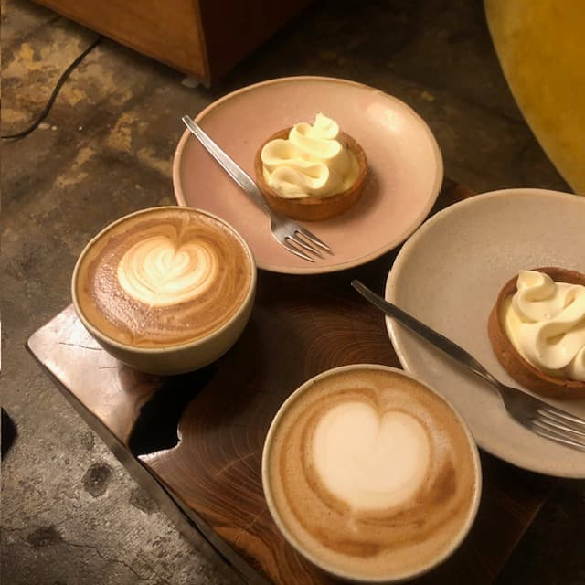
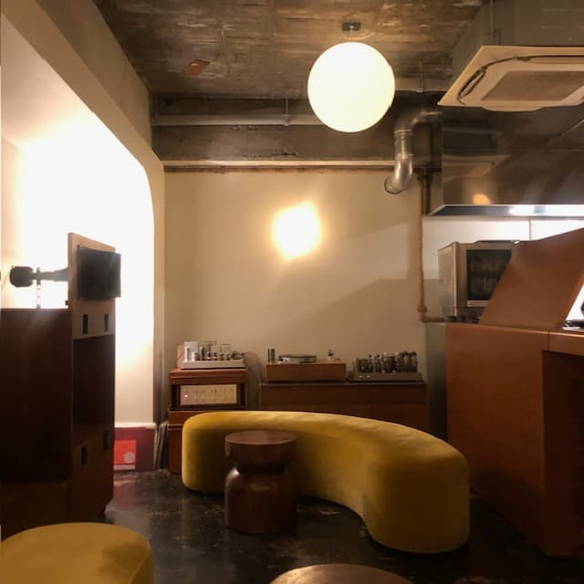
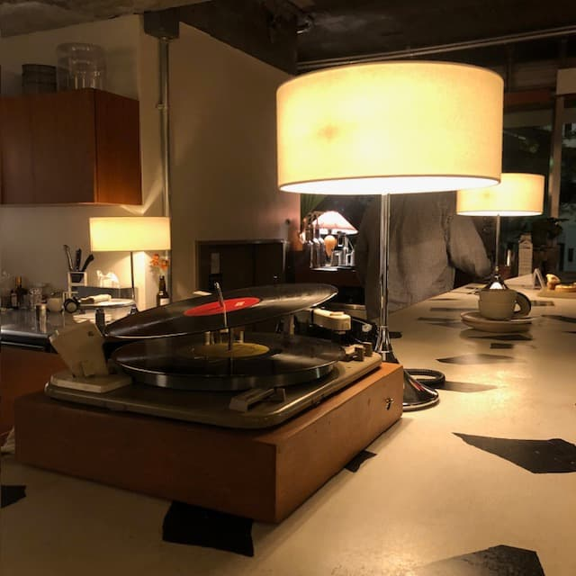

1.ARC
蔵前にあるカフェ、ARC(アーチ)
丸みを帯びた店内のインテリアが特徴的で、
どこを切り取っても映えること間違いなし！
23時まで営業しており、夜はワインも楽しめ
カフェでもバーとしても利用できる素敵なお店です



東京には多くのカフェがあります。
期間限定の美味しいフードやお店の雰囲気など、
また行きたい！と思ったカフェを紹介します。
蔵前にあるカフェ、ARC(アーチ)
丸みを帯びた店内のインテリアが特徴的で、
どこを切り取っても映えること間違いなし！
23時まで営業しており、夜はワインも楽しめ
カフェでもバーとしても利用できる素敵なお店です
ワインボトルに書かれたOpen/Closeの目印が
お洒落で可愛い、恵比寿にあるカフェです
テラス席もあり、夜風に当たりながら
美味しいコーヒーを飲むことができ、
デートにもおすすめのお店です
表参道にあるカフェ レ ジュ グルニエ
Grenierとはフランス語で屋根裏部屋を意味し
その名の通り、天井が低くこじんまりとした
レトロな空間が素敵なカフェ
訪店した際には必ず飲みたいと思う、
オレグラッセ発祥のお店です
中目黒の住宅街にあるお店で
季節によって異なるスイーツが絶品です
モーニングのメニューもあり、朝活にもピッタリ！
大きな窓から差し込む日差しが暖かく、
ついつい長居してしまいそうな雰囲気の良いカフェでした
恵比寿駅から徒歩4分にあるサイフォンコーヒーが
楽しめる、コーヒースタンド
中でもカヌレは個人的に一押しで、コーヒーとの相性も抜群です
開放的な雰囲気は誰でも立ち寄りやすく、
カフェ巡りに是非おすすめしたいお店です！
以上、また訪れたいカフェBest5でした！
東京でのカフェ活の参考になれば幸いです。